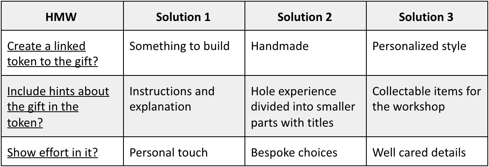

The aim is to create an engaging experience when receiving a meaningful present, that may
have the form of a card or a ticket. School project performed as an individual taking into account the needs
of one user only.
My very first aim was to get to know my user and empathize with her. This project
started with a structured interview to my user, Julie, to get to know her better and
to help me plan the next interview based on her answers. The second one was an ethnographic
interview, where open questions are presented but the user is completely free to talk....
Julie was also asked to perform a short personality test online to see if I could get
interesting facts about her. This helped me getting to some details I did not get from
interviews. Finally, observation has been performed with the rapid ethnography method in two natural
contexts for her.
Activities
Desk research
Semi-structured interview
Ethonographic interview
Rapid ethnography observation
Define
The first step for building my user portrait was to make a sketch that included all
the relevant information, divided into three
blocks: personal information, personal tastes and experience, containing studies
and jobs. A brief description of her origins was important, since she comes from ...
a mix of cultures and this have to be considered when designing. The quote in the
portrait talks about aesthetics: I decided to include it because when interviewed, she rated aesthetics with an 11 out of 10, so I
have to take it into account when I will create both physical token and digital prototype.
Deliverables
User persona
Design brief
Ideate
My first step towards ideation has been the generation of several How Might We questions.
I thought about which are the most important ones that answer and satisfy user’s needs and kept only
some of them. With the ones I kept I generated my very first three ideas for what this intangible gift could
be: a Netflix subscription,... a crafts workshop, or a concert ticket. The crafts workshop was the chosen one
because more in line with user’s personality. Afterward, a morphological chart has been used to generate three different
concepts and related scenarios representing real contexts of use for the possible final product.
Scenario 2 has been chosen as a base to start from, but parts from other scenarios have been used as well. I
made some iterations of my concept and my final aim was to build two prototypes. The physical one
consisting of an envelope containing an origami sheet and instructions. My user’s favourite origami animal is
the crane and she knows well how to fold a sheet for that. She is asked to do so and once finished, a URL link
will appear. Here is when she will start experiencing the digital prototype: she goes to that webpage and is
welcome in a screen saying there is something for her. She opens her gift and see the ticket to a crafts
workshop in London, that is her hometown. On the next screen she also has the possibility to choose
different dates, and I will explain why in the prototyping phase.
Deliverables
HMW questions
Morphological chart
User scenarios

Prototype
My first intention with the physical token was to use a Microsoft tag
to scan, since they are more aesthetically pleasant and could fit better on an origami paper, in addition to the fact that they are less
recognizable than the classics QR codes. However, doing so was more difficult to make perfectly... correspond three split parts of the tag. In
the end I decided for a handwritten shorten URL divided into three parts that would create one unique link once the origami crane was created.
Once the URL was typed by Julie into a browser, her digital experience started. She is welcomed in a page where she has to collect useful items to build a bag
to carry her present. Then she can use a button to build a bridge so then she will be able to get her gift. The workshop in London is finally shown to her!
But since I know my user thinks that activity-gifts have to be very well planned and ready for all the things that could go wrong, especially for busy dates. That is why I give
her the opportunity to choose from 4 different dates for attending the workshop, and in case 4 possibilities are too few, she also has the option to request an
even different date for her present. After this choice, she is told that she will receive her ticket on her email.
Deliverables
Physical token
Digital prototype
Test
The occasion for this gift is the 6th anniversary of Julie’s first day at the college of arts, where her passion for crafts started.
The physical token comes in an envelope. The envelope is built by myself, since she loves handmade things. She will receive it at home in her mailbox, since one of the first insights
I learned about my user is that when she receives a present, she needs to be in a comfortable situation and without other people or under pressure. The content of the physical token concerns
the final... gift as well, in a certain way, since it’s something to build with her hands, in addition to a handwritten sheet with instructions on how to proceed. It’s an origami crave. The
choice of the crave comes from my user’s preferences, since it is her favourite origami animal. I tried to make the digital experience engaging but without making it boring, adding some
steps and difficulties before opening the gift. Once she thinks that she can open it, she sees that the gift has ran away. Here I tried to create some suspense, before letting her know that
the real gift was a crafts workshop in London. I tried to achieve relatedness with the choice of the city, since it is the place where she was born. The problem at this point was that she
thinks that intangible gifts are really hard to plan, that if she receives a gift of that kind she will have other plans on that exact day. That’s why I decided to include a part where she
can decide the date of her workshop, choosing among different ones. Doing so, she will satisfied since no plans will overlap. At the end of the whole experience, she will be brought
back to her past, thinking about all her experiences since that first day at the college of arts. The idea was finally pitched to the client.